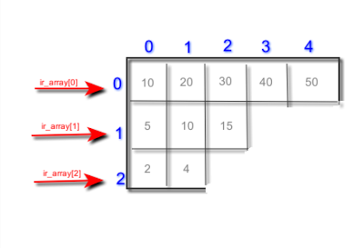

Tema 5. Col·leccions
Introducció
Fins ara havíem treballat amb tipus de dades simples: int, char, double, float, bool... però que passa si necessitarem guardar un conjunt de dades o informació relativa a una persona? Nom, cognoms, DNI, adreça postal, data de naixement etc? Amb els tipus de dades simples ens seria impossible representar aquesta informació. Es per això que s’utilitzen els tipus de dades compostos que ens permetran agrupar de diverses maneres aquesta informació.
Ens podem trobar diversos tipus de dades compostos i en aquest tema veurem:
- Cadenes de caracters: conjunt d'elements de tipus bàsic caracter.
- Arrays: també coneguts com vectors o arreglos, contenen elements d'un mateix tipus base o objectes de la mateixa classe.
- Estructures: conjunt d'elements heterogenis, no tenen per què ser del mateix tipus base.
Arrays
Comencem per veure l'estructura més simple de totes, l'array. Un array és un tipus de dades compost que permet emmagatzemar un nombre x d’elements del mateix tipus. Amb una única declaració podem tenir accés a un conjunt de valors agrupats. Aquestes agrupacions o arrays poden bé ser de tipus simples o també de tipus compostos.
Per tal d’accedir a cadascun dels elements del array s’utilitza un índex o posició. La primera posició de tot array és la 0 mentre que la segona seria la que té índex 1. Açò pot marejar un poc al principi.
- Array d’enters: {8,2,14,55,3,7}
- Array de caràcters: {‘n’,’a’,’t’,’o’}
- Array de cadenes: {"hola", "ciao", "hi", "allo"}
És molt important distingir entre valor i posició. Mentre que el valor és el contingut de l’array en una posició determinada la posició és l’índex que ens permet recorres l’array i tot el seu contingut.
A l’exemple anterior tenim un array de 8 enters, la part superior de color blau ens indica les posicions que van de la 0 a la 7, 8 posicions ens total. Mentre que a la fila inferior trobarem el valor que conté cadascuna de les posicions. Per exemple en la posició 5 (la sisena) de l’array tindríem emmagatzemat un valor de 8.
Un altre concepte a tenir en compte és la dimensió o grandària de l’array que ens determina el total d’elements que es poden guardar en aquest. En el nostre cas la mida seria de 8.
Declaració i creació d'un array en Java
Un array en Java és una estructura de dades que ens permet emmagatzemar un conjunt de dades del mateix tipus. El grandària de l’array es determina en la seua declaració i no es permet la seua modificació posterior
Alguns exemples:
Aquesta forma de declarar i inicialitzar arrays es pot fer en una sola línia de la següent forma:
Inicialització d'un array
Per tal d’accedir a les dades que conté un array necessitem l’identificador d’aquest així com també la posició concreta a la qual volem accedir. Per exemple, imaginem un array d’enters que es diu números.
D’aquesta forma hauríem creat un array de 5 enters que contindria els nombres parells fins al 10.
Diferència entre declaració creació i inicialització
És molt important que coneixeu bé aquests conceptes:
- Declaració: assignació de nom i tipus.
- Creació: reserva d'espai necessari.
- Inicialització: assignació de valors.
Fins ara tots aquests conceptes anaven lligats quan només utilitzavem tipus de dades bàsics, per exemple, quan creavem en un programa nostre una variable de tipus enter, en la mateixa línia anava la declaració (donem nom a la variable), la creació (automaticament es reserva l'espai necessari per al tipus de dades que hem creat) i la inicialització (ja que per defecte i segons el tipus bàsic s'assignava un valor inicial). Però ara amb els arrays la cosa és un poc més complexa. Vegem algun exemple.
Repassem el codi anterior. A la línia 1 de codi i només amb aquesta línia hem aconseguit:
- Declaració: es declara una variable amb identificador 'a' i de tipus enter
- Creació: automaticament el compilador li reserva l'espai necessari per a representar un enter: 4 bytes.
- Inicialització: per defecte se li dona valor 0.
Ara si mirem les línies següents podrem observar que:
- A la línia 2 del codi es produeix la declaració de l'array. Hem creat l'array i li hem assignat identificador però, quants elements pot emmagatzemar?
- A la línia 3 del codi és on es crea l'array, és a dir, es reserva espai en memòria. Al nostre cas 10 enters, és a dir, 40 bytes.
- En aquest cas com que el tipus base de l'array és enter, la inicialització d'aquest vindria implicita en la reserva de memòria assignant-se valor 0 a tots els elements.
Però com poden inicialitzar cadascun dels elements del nostre array de forma manual?
Accés als elements d'un array
Una vegada ja tenim la declaració de l’array i la seua inicialització, si volem bé accedir al seu contingut o modificar-ho, necessitaríem l’identificador de l’array i l’índex al qual volem accedir. És molt important tenir en compte que el primer element d’un array en Java està a la posició (índex) 0 i no a la posició 1 com ens indicaria la lògica.
Activitat 901. Declara, crea i inicialitza
Escriu un programa en Java utilitzant Processing IDE que permeta emmagatzemar en un array 10 enters. Aquest array s'inicialitzarà element a element cridant a una funció que es dirà 'generaNumAleatori' i que tornara un enter random entre 0 i 100. La funció tindrà el següent prototip:
- int generaNumAleatori();
Has de tindre en compte que la inicialització de l'array s'ha de fer al mètode setup per tal que no es torne a modificar a cada cicle del draw
| Criteri | 4 — Excel·lent | 3 — Correcte | 2 — Parcial | 1 — Incorrecte | 0 — Inexistent o incoherent | Pes |
|---|---|---|---|---|---|---|
| Ús de la matriu 9x9 | Utilitza correctament la matriu bidimensional, amb recorreguts eficients i sense errors d’índex | La matriu funciona correctament amb petits errors no crítics | Hi ha errors puntuals en accessos o recorreguts | La matriu presenta errors greus de funcionament | No utilitza correctament una matriu 9x9 | 20% |
| Generació del Sudoku | El Sudoku es genera correctament i sempre compleix les regles | El Sudoku funciona quasi sempre correctament | La generació és parcialment funcional | El Sudoku presenta errors freqüents | No genera un Sudoku vàlid | 15% |
| Representació gràfica | El tauler és clar, alineat i fàcil d’utilitzar | La representació és funcional amb detalls millorables | La interfície és poc clara però usable | La representació dificulta el joc | No hi ha representació funcional | 15% |
| Interacció amb l’usuari | Permet seleccionar i editar cel·les correctament amb bona resposta visual | La interacció funciona amb errors menors | Només permet algunes interaccions bàsiques | La interacció és incorrecta o molt limitada | No hi ha interacció funcional | 15% |
| Validació de moviments | Comprova correctament files, columnes i submatrius | Detecta la majoria d’errors | La validació és incompleta | La validació és incorrecta | No valida moviments | 20% |
| Modularització del codi | El programa està ben estructurat en funcions reutilitzables i coherents | Existeix una estructura acceptable amb certa modularitat | La modularització és limitada | El codi està poc organitzat | Tot el codi és incoherent o desorganitzat | 10% |
| Llegibilitat i qualitat del codi | Variables clares, bona indentació i comentaris útils | El codi és majoritàriament llegible | El codi és difícil de seguir en alguns punts | El codi és confús i poc llegible | El codi és incomprensible o incorrecte | 5% |
Encara no disponible
Arrays de caracters
Un array que conté caràcters en lloc de números funciona d’una forma molt semblant al que s’ha explicat en els apartats anteriors. Es pot veure de forma senzilla a l’exemple que vos mostrem a continuació.
Activitat 902. Array de caracters
Millora el codi anterior. Afegeix un array que puga emmagatzemar 10 caracters i inicialitza-lo amb un altre mètode que es dirà: 'generaCharAleatori()'. El prototip del mètode hauria de ser:
- char generaCharAleatori();
Igual que a l'activitat anterior, hauràs de cridar a aquest mètode des del setup i no des del draw
Encara no disponible
Arrays com a paràmetres
Com qualsevol altre tipus de dades, un array també es pot passar com a paràmetre a un mètode. Els arrays sempre es passen per referència, és a dir, quan passem un array per paràmetre a un mètode, el que en realitat estem passant és un adreça de memòria que és la que ens indicaria on està l’inici del contingut d’aquest. Passar per referència qualsevol paràmetre significa que qualsevol modificació que es faja dins del mètode afectarà també a l’array fora d’aquest.
No passa el mateix si passem un element concret de l’array, en aquest cas a l’igual que amb els altres paràmetres, aquests es passen per valor, per tant les modificacions o canvis que es produeixen dins del mètode no afectaran fora d’aquest.
Activitat 903. Mostra array amigablement
Seguint amb el codi anterior, fes dos mètodes per la nostra aplicació que mostre, de forma amigable, l’array de números i l’array de caràcters. Els mètodes es podrien dir mostraEnters i mostraCaracters. Utilitza totes les funcions que conegues de Processing IDE per tal que mostre els arrays de la forma més estètica possible.
Igual podria ser útil que li afegires coordenades (x,y) com a paràmetres a la funció de mostrar arrays per tal de poder indicar-li on vols que es mostren.
Encara no disponible
Bucle for en Java
A les activitats anteriors t'hauràs trobat amb el dilema de com recórrer tant l'array d'enters com el de caracters per tal d'inicialitzar-lo. Si vares entendre bé el teorema d'estructura i les estructures iteratives, segurament hauràs utilitzat un bucle while, un do while o un for. Però aquests bucles a l'hora de recórrer arrays tenen un inconvenient: el grandària de l'array. El programador ha de controlar quan s'arriba al final de l'array per tal que l'aplicació no done una errada inesperada i això de vegades no és senzill. Mira els següents exemples de bucles:
Activitat 904. Fes una traça
Fes una traça al codi anterior i observa com els diferents bucles recorren l'array. Escriu la teua conclusió a un comentari de documentació al codi.
Encara no disponible
La millor forma de recórrer un array sense haver de controlar quan s’arriba al final és la sentència for usada d’una manera alternativa. Si per exemple tenim un array d’enters que s’anomena «vector» i volem llistar tots els seus elements, podríem fer el següent:
Activitat 905. Recorre i mostra l'array
Seguint amb les activitats 502 i 503, modifica el mètodes mostraEnters i mostraCaracters per tal que utilitzen aquest últim bucle que hem vist per recorrer arrays en Java. Quan executes per primera vegada, segurament no funcionarà només sustituint la línia del for i hauràs d'afegir algo més de codi per poder solucionar el problema. Escriu el problema amb el que t'has trobat i la solució que has aplicat a un comentari.
Podriem fer el mateix als mètodes d'inicialització dels arrays? Per què? Escriu la resposta en a un comentari de documentació.
Encara no disponible
Arrays multidimensionals
Fins ara hem estan utilitzant arrays d’una sola dimensió, coneguts també com vectors, taules o llistes. Aquests arrays es recorren amb ajuda d’un sol índex (tenen una sola dimensió). En aquest apartat estudiarem arrays de més d’una dimensió per als que necessitarem més d’un índex a l’hora de ser recorreguts. Els arrays multidimensionals més comuns són els de dues dimensions o bidimensionals, també coneguts com matrius. És comú representar aquest tipus de dades com una taula composta per una sèrie de files i columnes:
| 0,0 | 0,1 | 0,2 | 0,3 | ... | 0,N |
| 1,0 | 1,1 | 1,2 | 1,3 | ... | 1,N |
| 2,0 | 2,1 | 2,2 | 2,3 | ... | 2,N |
| ... | ... | ... | ... | ... | ... |
| N,0 | N,1 | N,2 | N,3 | ... | N,N |
Al contrari del que passava amb els arrays d’una sola dimensió on només necessitavem un índex per accedir al valor, en els arrays de dues dimensions com el de l’exemple anterior, necessitarem dos índex per accedir al valor de l’array. Les matrius, com es coneixen els arrays bidimensionals es forme per files i columnes.
Declaració i creació
Per tal de declarar una matriu en java, és a dir, un array de dues dimensions, ho farem de la següent forma:Ç
Si es fixeu, mentre quan declaravem un array d’una sola dimensió utilitzavem només un parell de claudàtors:
És fàcil deduir que si volguerem declarar un array de tres dimensions, hauriem d’utilitzar tres parells de claudàtors.
Amb aquesta instrucció el que estem fent es declarar la matriu però no li hem dit quina grandària tindrà. Eixa és la diferència entre declaració i creació. Per tal de crear, és a dir, reservar espai per a la nostra matriu, hem de fer el següent:
On n i m són valors enters que ens indiquen la grandària de cada dimensió. Per exemple, per declarar i crear una matriu d’enters de 5 files i 10 columnes fariem el següent:
Inicialització i accés
El procés d’inicialització d’un vector, dona igual les dimensions que tinga, consisteix en donar-li valor a les cel·les que inicialment estan buides. Aquesta inicialització es pot fer de tres formes diferents:
- De forma individual.
- En el moment de la declaració.
- Mitjançant l’ús d’una sentència de control repetitiva.
Inicialització i accés a cada element de l'array Per accedir a una dada en un array multidimensional hem de coneixer els índex de posició d’aquest. En un array de dues dimensions, per accedir a una dada s’ha d’indicar la fila i la columna d’on es troba aquesta informació.
Per exemple, imaginem que tenim la següent taula (array de dos dimensions)
| 12 | 13 | 5 | 9 | 22 | 14 |
| 21 | 11 | 8 | 56 | 23 | 7 |
| 6 | 10 | 32 | 36 | 24 | 99 |
| 78 | 55 | 57 | 79 | 18 | 14 |
Per tal d’inicialitzar-la element a element hauriem d’executar les següents sentències:
Per tal d’entendre el concepte de matriu o array bidimensional, realitzarem un exercici on treballarem amb les típiques matrius matemàtiques, realitzant les operacions pròpies d’aquestes.
Activitat 906. Matrius
Es tracta de desenvolupar una aplicació que realitze operacions utilitzant matrius de 3x3.
El menú ha de mostrar el següent:
- Emplena la primera matriu
- Emplena la segona matriu
- Visualitza les matrius
- Suma les matrius
- Multiplica per un escalar
- Producte de matrius
- Trasposta
- Eixir
Per a cadascuna de les operacions anteriors s’ha d’implementar un mètode Mireu el següent exemple:
Encara no disponible
Arrays irregulars
Una matriu irregular o escalonada no és més que un array de taules, on cadascuna de les taules que formen l’array no necessàriament han de tenir la mateixa grandària.

La declaració d’un array irregular en java seria de la següent manera:
Activitat 907. Alumnes i assignatures
Imagina que has de mantindre les notes dels alumnes de tres assignatures. A cada assignatura tens 15 alumnes, tal que s’ha de mantenir la informació mitjançant una variable que gràficament presenta la següent estructura
| Assignatura 1 | 5 | 6 | 7,3 | 2,3 | 4,5 |
| Assignatura 2 | 7,8 | 8,7 | 7,7 | 3,3 | 4,8 |
| Assignatura 3 | 7 | 9 | 10 | 8,2 | 2,8 |
Crea una aplicació en la que pugues:
- Inserir notes de l’assignatura sel·leccionada.
- Inserir totes les notes
- Calcular la nota mitjana de les assignatures.
- Ordenar les notes de forma ascendent.
- Estadística.
- Eixir de l’aplicació.
La primera opció primer et demanarà de quina assignatura vols introduir una nota (1, 2, 3) i després et demanarà la nota que podrà ser un número decimal des del 0.0 fins al 10.0. La segona, et mostrarà un diàleg on l'usuari anirà introduint notes una a una fins introduir-les totes. Al diàleg s'informarà en tot moment de quina assinatura i quina nota es tracta. Calcular la mitjana de les assignatures mostrarà per la pantalla de l'aplicació per a cada assignatura quina és la seua mitjana. L'opció d'ordenar les notes de forma ascendent és que per a cada assignatura les notes passaran a estar disposades a l'array de menor a major nota. L’opció estadística mostra la quantitat de notes entre 0 i 4, entre 4 i 5, entre 5 i 7, entre 7 i 9 i entre 9 i 10. Eixir tancaria l'apliació.
Encara no disponible
Un sudoku simple
Llig l'enunciat de la següent activitat i fes un sudoku simple.
Activitat 908. Un sudoku simple
El següent codi és un mètode que s'encarrega d'emplenar una matriu de 9x9 seguint la lògica del sudoku
Escriu un programa utilitzant Processing IDE que et mostre un Sudoku per pantalla, que permeta al jugador emplenar les cel·les buides i que comprove si el número escollit es vàlid o no.
Encara no disponible
String: Cadenes de caracters
En Java hem vist que quan volem emmagatzemar un valor enter, definim una variable de tipus int, si pel contrari, el que volem és emmagatzemar un valor amb decimals, definim una variable de tipus double o float. Ara bé, si el que volem és emmagatzemar una cadena de caracters, per exemple el nom d’una persona, hem de definir un objecte de tipus String
Aquest codi el que fa és crear un objectes string strNom que conté el nom: «Manolo el del bombo». També podriem crear un string de la següent manera:
Al tractar-se d’una classe, la forma natural de treballar amb ella serà mitjançant l’ús dels mètodes que disposa la classe. Aquests mètodes són:
- int length(): retorna la llargària de la cadena en un enter.
- char charAt (int i): ens diu quin caracter està a la posició ‘i’
- String substring(int i): ens retorna la subcadena que hi ha a partir de la posició ‘i’ fins el final de la cadena
- String substring(int i, int j): ens retorna la subcadena que es troba des de l’índex i fins el j
- String concat(String str): concatena la cadena ‘str’ que es passa com a paràmetre al final de la cadena. Per exemple:
- int indexOf(String s): Ens retorna l’index dins de la cadena de la primera aparició de la subcadena s. Per exemple:
- int indexOf(String s, int i): retorna l’índex dins de la cadena de la primera aparició de la subcadena s a partir de l’índex i
- int lastIndexOf(int ch): torna l’índex de l’última vegada que apareix el caracter ‘ch’ dins de la cadena.
- boolean equals(String str): Compara l’string amb l’objecte que es passa per paràmetre.
- boolean equalsIgnoreCase (String otroString): Compara dues cadenes sense tenir en compte majúscules i minúscules.
- int compareTo (String otroString): compara dues cadenes lexicogràficament. En altres paraules, diu quina és major que l’altra.
- int compareToIgnoreCase (String otroString): com el mètode anterior però sense tenir en compte majúscules ni minúscules.
- String toLowerCase(): converteix la cadena a minúscules.
- String toUpperCase(): converteix la cadena a majúscules.
- String trim(): suprimeix els espais en blanc que puguen haver als extrems de la cadena
- String replace (char oldChar, char newChar): substitueix totes les ocurrències de oldChar que hi ha a la cadena per newChar
Col·leccions i llibreries
Les col·leccions en Java són un marc que proporciona una arquitectura per emmagatzemar i manipular el grup d'objectes Poden realitzar totes les operacions que realitzeu sobre les dades, com ara la cerca, l'ordenació, la inserció, la manipulació i la supressió.
Java ofereix interfícies (Set, List, Queue, Deque) i classes (ArrayList, Vector, LinkedList, PriorityQueue, HashSet, LinkedHashSet, TreeSet).
Jerarquia de classes
A continuació pots observar la jerarquia de classes que ens ofereix l'API de Java respecte de les col·leccions.
ArrayList
La classe ArrayList implementa la interfície List. Utilitza una matriu dinàmica per emmagatzemar l'element duplicat de diferents tipus de dades. La classe ArrayList manté l'ordre d'inserció i no està sincronitzada. Es pot accedir aleatòriament als elements emmagatzemats a la classe ArrayList. Considereu l'exemple següent.
Activitat 909. Arraylists en Java
Fes un programa que: - Guarde noms en una llista - Permeta afegir i eliminar noms - Mostre la llista final
Iteradors
Fins ara hem vist com crear algunes de les col·leccions que java posa a disposició dels programadors, però hi han molte més. Segurament també, t'has estat preguntant com es poden recórres aquestes noves llistes element a element. Per tal de fer-ho de la forma més eficient, ho fariem amb iteradors. Mira el següent exemple:
També es solen utilitzar bucles for-each
Activitat 910. Recorre una llista
Mostra els elements d'una llista amb el for clàssic, amb un for-each i utiltzant un iterador.
HashSet
Aquesta classe implementa la interfície Set, recolzada per una taula hash (en realitat una instància HashMap). No ofereix cap garantia quant a l'ordre d'iteració del conjunt; en particular, no garanteix que l'ordre es mantingui constant al llarg del temps. Aquesta classe permet l'element nul.
Activitat 911. Crea una llista amb els dies de la setmana utilitzan un ArrayList
Utilitza una col·lecció Arraylist per crear un conjunt amb els dies de la setmana
Hashmap
Una hashmap és semblant al hashset però permet emmagatzemar parelles clau-valor
Activitat 912. Ús de hashmap
Enunciat
TreeSet
Activitat 913. Crea un conjunt amb els balos d'or usant un HashSet
Utilitza una col·lecció HashSet per crear un conjunt amb els guanyadors del baló d'or
LinkedList
Activitat 914. Crea una llista amb els companys de classe utilitzant una LinkedList
Utilitza una col·lecció LinkedList per crear un conjunt amb els noms dels teus companys de classe
Activitat 915. Llista d'espera de pacients
Crea una llista d'espera de pacients amb la col·lecció que trobes més adequada i crida als pacients un a un. Justifica la teua decisió al comentari de codi de l'aplicació.
Activitat 916. Recorre els balons d'or amb un iterador
Recorre el conjunt de guanyadors del baló d'or de l'activitat 523 i mostra'ls de forma amigable per pantalla. Canviaries el tipus de col·ecció en aquesta activitat per emmagatzemar els premiats? Quina escolliries? Per què? Quins avantatges i inconvenients tenen les altres col·eccions de java front a l'escollida per tu? Escriu totes les respostes al comentaris de documentació.
Activitat 917. Recorre la llista d'espera amb un iterador
Recorre la llista d'espera de clients de l'activitat 525 utilitzant un iterador. Canviaries la col·lecció? Per què?
Activitat 918. Crea un conjunt ordenat amb TreeSet per crear una llista ordenada de noms.
Crea una llista ordenada de noms.
Activitat 919. Converteix el Projecte Alumnes i assignatures
Basant-nos en l'activitat 520 "Alumnes i Assignatures" utilitza el que hem vist de les distintes col·leccions que ens proporciona java per millorar el nostre codi.
Genèrics
Peremten treballar amb tipus genèrics
Ús
Activitat 920. Generics
Crea una classe genèrica que guarde dos valors i permeta obtenir-los.
Expressions regulars en Java
Les expressions regulars són una forma de crear un plantilla que pot servir per:
- Comprovar si un text compleix un format determinat: El NIF ha de tenir 8 dígits i una lletra. Una matrícula de cotxe ha de tenir 4 dígits i 3 lletres. Un número de telèfon ha de tenir 3 dígits, un punt, 3 dígits, un punt i 3 dígits.
- Buscar si existeix una subcadena (amb un format determinat) dins d'un text.
- Buscar i canviar una subcadena per una altra dins d'un text, només una vegada o totes les que aparega.
Caracters especials
[ ]: per especificar un conjunt de caràcters.
( ): per agrupar.
{ }: per indicar un nombre de repeticions.
\: per poder utilitzar caràcters especials, per representar caràcters especials o per conjunts de caràcters.
^: té dos possibles significats:
indicar que la coincidència ha d'estar al principi de la línia.
si es posa com a primer caràcter dins de [ ], implica negació ([^AEIOUaeiou] detectarà qualsevol caràcter que no sigui una vocal).
$: indica que la coincidència ha d'estar al final de la línia.
|: per triar entre diferents possibilitats.
?: indica que el caràcter o grup anterior pot aparèixer una o cap vegada.
+: indica que el caràcter o grup anterior ha d'aparèixer una o més vegades.
*: indica que el caràcter o grup anterior pot aparèixer zero, una o més vegades.
.: equival a qualsevol caràcter.
\t: representa un tabulador.
\n: representa un salt de línia.
\s: representa qualsevol caràcter que sigui un separador. És equivalent a [ \t\n\x0B\f\r].
\S: representa qualsevol caràcter que no sigui un separador. És equivalent a [^\s].
\d: representa qualsevol caràcter que sigui un dígit. És equivalent a [0-9].
\D: representa qualsevol caràcter que no sigui un dígit. És equivalent a [^0-9].
\w: representa qualsevol caràcter que pot formar una paraula. És equivalent a [a-zA-Z_0-9].
\W: representa qualsevol caràcter que no formi part d'una paraula. És equivalent a [^\w].
Activitat 921. Expressions regulars en java
Escriu el codi necessari per tal validar adreces de pàgines web.
Enumeracions (Extra)
Una enumeració és un tipus especial de ‘classe’ que representa un grup de constants. Cada element d’aquesta estructura està associada a un valor de un tipus de dades concret (normalment enter) on el primer element de l’enumeració sol agafar el valor 0